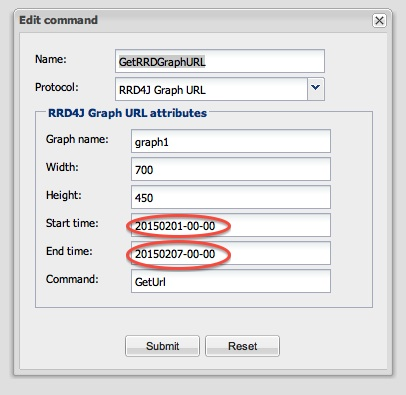

hi there,
two weeks ago i bought a thin client, a z-wave stick and a z-wave power monitor. In my opinion open remote is the most suitable domotica solution for me.
After reading a lot in this great forum i got the the point of making my first user interface. Now i am ready to make a graph that displays my power consumption.
I followed the tutorial and managed to et a working graph!
Now i would like to display a graph that shows only the current date. the GetRRDGraphURL command is able to get a graph with a fixed beginning and end date. Is it possible to set the dat on the current dat stating at 0:00 hour and ending at the current date at 2359 hour?

{kind=link}
{kind=link}
|
Hi Bart, Start and end time fields are able to accept 1) Constant date in format yyyyMMdd-HH-mm 2) Variable time derived from current time with optional time offset specified. Prefix '-' or '+' denotes what offset should be used. The offset is specified using "Polling interval string". The quotes are not of course part of the text you specify into the fields. But without the quotes it is hard to show that the End time is a string consisting of one space. When I wanted to show a graph with values within last 24 hours I used: Sources: http://sourceforge.net/p/openremote/code/HEAD/tree/tags/project/Controller/Controller_2_1_1/src/org/openremote/controller/servlet/RrdGraphServlet.java#l80 http://sourceforge.net/p/openremote/code/HEAD/tree/tags/project/Controller/Controller_2_1_1/src/org/openremote/controller/utils/Strings.java#l153 Happy OpenRemoting, Fekete |
{kind=link}